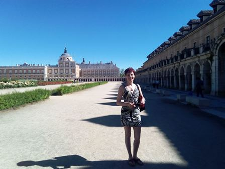
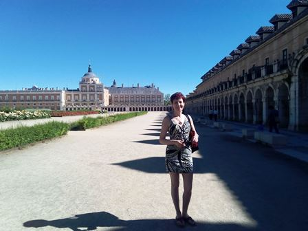
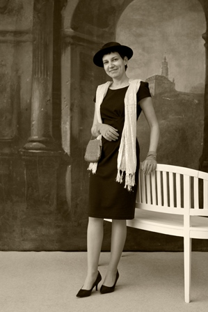
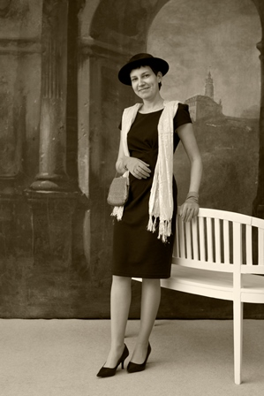
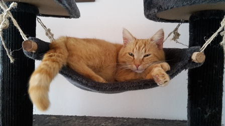
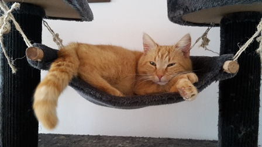
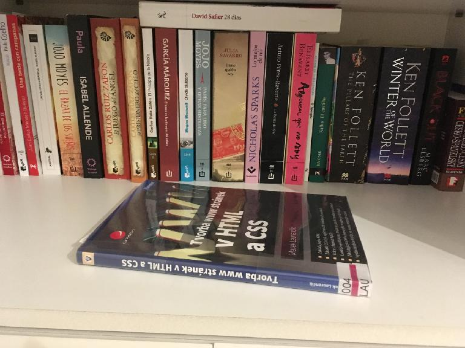
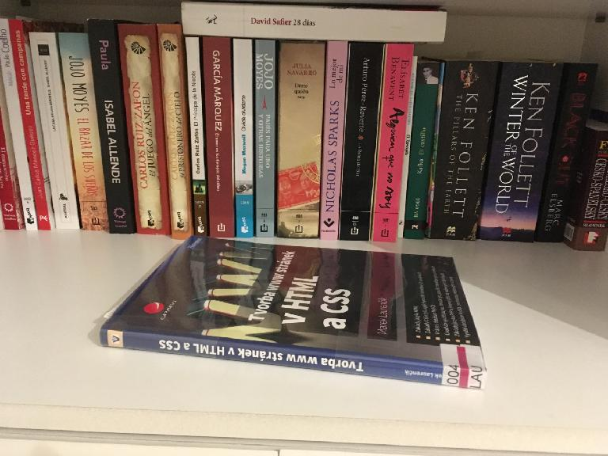

Ahoj, jmenuju se Gabri. Vystudovala jsem ekonomiku a management v Budějovicích a v Linzi. Potom mě osud zavál do korporátní sféry - nastoupila jsem do nadnárodní firmy, kde jsem během 15 let působila na různých pozicích. Aktuálně vedu skupinu expertů v oblasti controllingu. Při své práci jsem v kontaktu s kolegy z mnoha zemí a při služebních cestách se podívám na různá místa:

 

 

Ve volném čase moc ráda čtu - v posledních měsících hltám knížky ve španělštině. Pravidelně také vyrážíme za kulturou třeba do divadla. Jsem milovnicí koček - doma máme tři kočičí mazlíčky, se kterými se krásně odpočívá. Někdy mě nechají relaxovat i při pletení, ale častěji si klubíčko nárokují sami. Mojí srdeční záležitostí je tanec. Večery v latinskoamerickém rytmu patří k mým oblíbeným.

 

 

Mým koníčkem byly odjakživa i cizí jazyky. K němčině a angličtině jsem během gymnázia přidala francouzštinu, japonštinu a španělštinu. K čemu jsem se ovšem dosud nedostala, jsou jazyky programovací. To teď zkusím napravit tím, že se s pomocí Czechitas seznámím se základy HTML :).
 Kontakty:
Kontakty: